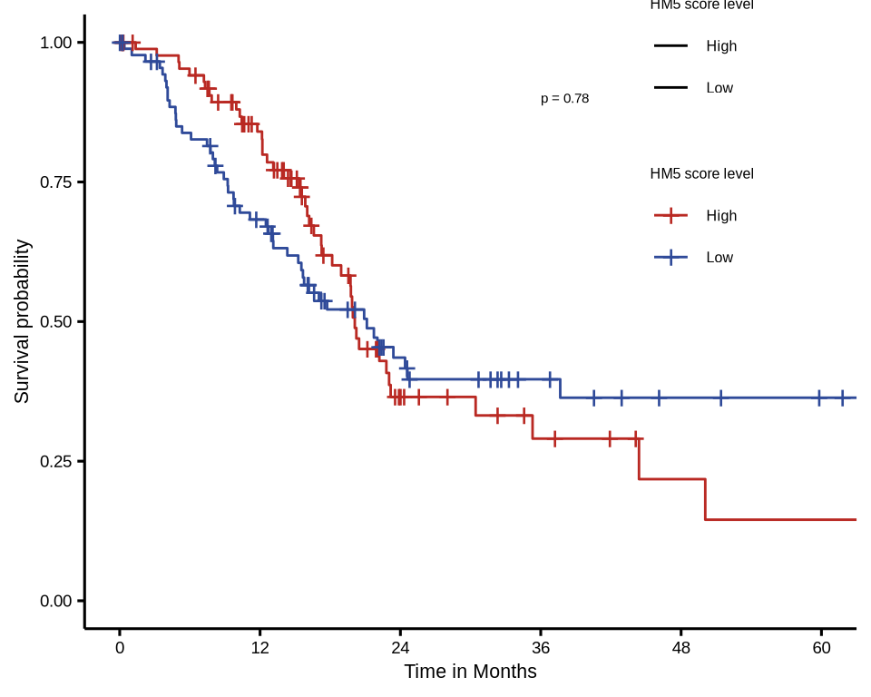

pkgs <- c("fs", "configr", "stringr", "ggpubr", "ggthemes",
"jhtools", "glue", "ggsci", "patchwork", "tidyverse", "dplyr", "Seurat",
"scDblFinder", "paletteer", "readxl", "writexl", "ComplexHeatmap",
"circlize", "data.table", "survminer", "survival")
for (pkg in pkgs){
suppressPackageStartupMessages(library(pkg, character.only = T))
}
fs::dir_create("./results/fig1_s1")
# themes -----
my_theme1 <- theme_classic(base_size = 8) +
theme(legend.key.size = unit(3, "mm"), axis.text = element_text(color = "black"))
my_theme2 <- theme_classic(base_size = 8) +
theme(legend.key.size = unit(3, "mm"), legend.position = "none",
axis.text = element_text(color = "black"),
axis.text.x = element_text(angle = 10, vjust = 1, hjust = .5),
axis.line = element_blank(),
axis.ticks = element_line(color = "black"),
panel.border =
element_rect(fill = NA,colour = "black", linewidth = .5,
linetype = "solid"))
my_theme3 <- theme_classic(base_size = 8) +
theme(panel.grid.major = element_line(colour = NA),
panel.background = element_blank(),
plot.background = element_blank(),
panel.grid.minor = element_blank(),
panel.border = element_blank(),
strip.clip = "off",
legend.position = 'none',
axis.text.y = element_blank(),
axis.text.x = element_blank(),
axis.title.y = element_text(size = 8, color = "black"),
axis.line.x = element_blank(),
axis.line.y = element_blank(),
strip.background = element_blank(),
strip.text.y.left = element_blank(),
axis.ticks.x = element_blank(),
axis.ticks.y = element_blank()
)
color_cells <- c("Acinar cells" = "#BE96BE", "B cells" = "#e8d056", "CAFs" = "#20B2AA", "DC" = "#FFA500",
"Ductal cells" = "#9370DB", "Endocrine cells" = "#98FB98", "Endothelial cells" = "#F08080", "Macrophages" = "#1E90FF",
"Mast cells" = "#7CFC00", "Neutrophils" = "#A6CEE3", "Stellate cells" = "#808000", "T/NK" = "#FF00FF")
tnk_cols <- c("NK" = "#EE6A50", "CD4T" = "#CB8A93", "CD8T" = "#F2AD88")
grp_cols <- c("Adjacent tissue" = "#2f4a99ff", "Tumor" = "#b92923ff")
mmu_cols <- c("B cells" = "#e8d056", "CAFs" = "#20B2AA", "DCs" = "#FFA500",
"Ductal cells" = "#9370DB", "Macrophage" = "#1E90FF",
"Mast cells" = "#7CFC00", "Neutrophil" = "#A6CEE3", "T/NKs" = "#FF00FF",
"NK" = "#EE6A50", "CD4T" = "#CB8A93", "CD8T" = "#F2AD88", "gdT" = "#D854AA")1 Figure 1
Package load and plot settings.
1.1 (a) UMAP of all cell types
hsa_all <- read_rds("./data/seu_all_fil1.rds")
Idents(hsa_all) <- hsa_all$anot_modified1 %>% as.character() %>%
fct(., levels = c("Acinar cells", "Ductal cells",
"CAFs", "Stellate cells",
"Endothelial cells", "Endocrine cells",
"Mast cells", "Macrophages", "Neutrophils",
"DC", "B cells", "T/NK"))
p1 <- DimPlot(hsa_all, reduction = "rpca_umap", group.by = "anot_modified1",
cols = color_cells, raster = T, pt.size = 1.5) + my_theme1 +
theme(plot.title = element_blank(),
legend.text = element_text(size = 7), legend.position = "right") +
ggplot2::coord_fixed() + Seurat::NoAxes()
ggsave("./results/fig1_s1/fig1a_rpca_umap_all_ctypes.pdf",
p1, width = 7, height = 4.8, unit = "cm")1.1.1 Fig.S1a Cell type markers
Dotplot of cell type markers
endocrine_mks <- c("CHGB", "GCG", "SST", "DPP6", "KCNMB2")
ductal_mks <- c("KRT19", "MMP7", "KRT7", "KRT8")
acinar_mks <- c("AMBP", "CFTR", "PRSS1", "CTRB1", "CTRB2")
stellate_mks <- c("RGS5", "ACTA2", "ADIRF", "PDGFRB")
caf_mks <- c("LUM", "COL1A1", "COL1A2", "DCN")
endo_mks <- c("CDH5", "PLVAP", "VWF", "CLDN5")
mph_mks <- c("AIF1", "CD68", "CD14", "FCGR1A", "CD163")
dc_mks <- c("FLT3", "CD1C", "XCR1", "CLEC9A", "BATF3")
neutro_mks <- c("CSF3R", "S100A9", "S100A8", "MNDA", "LST1")
mast_mks <- c("KIT", "CPA3", "TPSB2")
b_mks <- c("MS4A1", "CD79A", "CD19", "CD79B")
t_mks <- c("CD2", "CD3D", "CD3E", "NKG7", "CD8A", "CD4")
mks_lst1 <- c(acinar_mks, ductal_mks, caf_mks, stellate_mks,
endo_mks, endocrine_mks, mast_mks, mph_mks, neutro_mks,
dc_mks, b_mks, t_mks)
dot1 <- Seurat::DotPlot(hsa_all, features = mks_lst1, dot.scale = 2.8) +
my_theme1 + Seurat::RotatedAxis() +
theme(axis.text = element_text(size = 8),
axis.text.x = element_text(angle = 90, vjust = 0.5, hjust = 1)) +
viridis::scale_color_viridis() +
labs(x = "", y = "") & theme(legend.position = "bottom") &
scale_size(guide = guide_bins(direction = "horizontal"), range = c(.5, 3))
ggsave("results/fig1_s1/figS1a_hsa_all_dot.pdf", dot1, width = 16, height = 8, unit = "cm")1.2 (b) Cell type proportion
df <- hsa_all@meta.data[, c("sample_id", "anot_modified1", "type2")] %>%
as_tibble(rownames = "barcode")
df_ctype <- df %>% group_by(type2, anot_modified1) %>% dplyr::summarise(nc = n()) %>%
group_by(type2) %>% dplyr::mutate(nt = sum(nc), ratio = nc/nt) %>% ungroup()
df_ctype$anot_modified1 <- factor(df_ctype$anot_modified1,
levels = c("Acinar cells", "Ductal cells",
"CAFs", "Stellate cells",
"Endothelial cells", "Endocrine cells",
"Mast cells", "Macrophages", "Neutrophils",
"DC", "B cells", "T/NK"))
a <- ggplot(data = df_ctype, mapping = aes(x = type2, fill = anot_modified1, y = nc))+
geom_bar(stat = "identity", width = 0.5, position = 'fill')+
scale_fill_manual(values = color_cells)+
scale_y_continuous(labels = scales::percent)+
guides(fill=guide_legend(title="cell type"))+
labs(x = "", y = "")+
my_theme2
ggsave("./results/fig1_s1/fig1b_bar.pdf", a, width = 4, height = 5, unit = "cm")Proportion change between adjacent tissue and tumor
df_ctype$type2 <- factor(df_ctype$type2, levels = c("Adjacent tissue", "Tumor"))
df_sam <- df %>% group_by(sample_id, type2, anot_modified1) %>%
dplyr::summarise(nc = n()) %>% group_by(sample_id, type2) %>%
dplyr::mutate(nt = sum(nc), ratio = nc/nt) %>% ungroup()
stat_test <- df_sam %>%
group_by(anot_modified1) %>%
rstatix::wilcox_test(ratio ~ type2, p.adjust.method = "none", paired = F)
stat_test <- stat_test %>%
mutate(p.adj.signif = case_when(p >= 0.05 ~ "ns",
p >= 0.01 & p < 0.05 ~ "*",
p >= 0.001 & p < 0.01 ~ "**",
p >= 0.0001 & p < 0.001 ~ "***",
p < 0.0001 ~ "****",
TRUE ~ "ns"))
stat_test <- stat_test %>%
rstatix::add_xy_position(x = "anot_modified1", dodge = 0.9, fun = "median_iqr")
stat_test$y.position <- 0.3
stat_test <- stat_test %>%
dplyr::filter(anot_modified1 %in% c("B cells", "DC", "Macrophages",
"Neutrophils", "Mast cells",
"T/NK"))
df_ctype1 <- df_ctype %>%
dplyr::filter(anot_modified1 %in% c("B cells", "DC", "Macrophages",
"Neutrophils", "Mast cells",
"T/NK"))
df_ctype1$anot_modified1 <- as.character(df_ctype1$anot_modified1)
df_ctype1$anot_modified1 <-
factor(df_ctype1$anot_modified1,
levels = c("B cells", "DC", "Macrophages", "Neutrophils",
"Mast cells", "T/NK"))
p1 <- ggplot(df_ctype1, aes(type2, ratio))+
geom_line(aes(group = anot_modified1), size = .5) +
geom_point(aes(color = anot_modified1), size = 1.5)+
scale_color_manual(values = color_cells)+
geom_rangeframe(sides = "bl") +
scale_y_continuous(expand = expansion(mult = c(0.2, 0.3)))+
scale_x_discrete(expand = expansion(mult = c(0.1)))+
my_theme3 + labs(x = '', y = '')+
facet_wrap(~anot_modified1, ncol=1, strip.position = "left")
p2 <- p1 +
stat_pvalue_manual(stat_test, tip.length = 0.05,
xmin="group1", xmax="group2",
position = position_dodge(0), vjust = 0.5, remove.bracket = F,
label = "p.adj.signif", size = 3, hide.ns =T)
ggsave("./results/fig1_s1/fig1b_point_line.pdf", p2, width = 2, height = 6, unit = "cm")
1.3 (c) T/NK cells
Boxplot of T/NK cell frequency in tumor and adjacent tissue
meta_hsa_all <- read_rds("./data/metadata_new.rds")
cd45_all <- meta_hsa_all %>% dplyr::select(all_of(c("anot_modified1", "type2", "sample_id"))) %>%
dplyr::filter(anot_modified1 %in% c("Macrophages", "B cells", "T/NK", "Neutrophils",
"DC", "Mast cells")) %>%
group_by(sample_id) %>% dplyr::add_count() %>% dplyr::rename("sum_n" = "n") %>%
dplyr::ungroup() %>% dplyr::distinct() %>% dplyr::rename("cd45_sum" = "sum_n") %>% .[, 3:4]
tnk_new <- read_rds("./data/tnk_anot_fin.rds")
df2 <- tnk_new@meta.data %>% rownames_to_column("barcode") %>%
mutate(main_type = "T/NK") %>%
dplyr::group_by(sample_id, main_type) %>% dplyr::add_count() %>%
dplyr::rename('sum_n' = "n") %>%
dplyr::group_by(sample_id, type2, sum_n, anot_fin) %>%
dplyr::count()
df3 <- cd45_all %>% left_join(x = ., y = df2) %>%
dplyr::rename("t_cell_sum" = "sum_n") %>% mutate(cd45_ratio = n / cd45_sum) %>%
dplyr::filter(!is.na(type2))
box1 <- ggplot2::ggplot(df3, aes(x = type2, y = cd45_ratio, fill = type2)) +
ggplot2::geom_boxplot( outlier.size = 0,
width = .5, outlier.alpha = 0) +
ggplot2::stat_summary(geom = "line", linewidth = .5, fun = "mean", color = 'black', group = "type2") +
ggplot2::stat_summary(geom = "point", shape = 21, fill = "#cFcF00FF", fun = "mean") +
ggplot2::facet_wrap(~ anot_fin, nrow = 1) +
# theme_classic(base_size = 6) +
scale_fill_manual(values = grp_cols) +
my_theme2 + theme(axis.title = element_text(size = 8),
axis.ticks.x = element_blank(),
axis.text.x = element_blank()) +
labs(x = "", y = "Ratio of CD45+ cells") +
ggpubr::stat_compare_means(aes(group = type2), method = "wilcox.test",
hide.ns = F, size = 2, label = "p.signif",
bracket.size = .3, label.y = .8,
comparisons = list(c("Adjacent tissue", "Tumor"))) +
ggplot2::scale_y_continuous(limits = c(0, .9), breaks = c(0.0, 0.2, 0.4, .6, 0.8))
ggsave("./results/fig1_s1/fig1c_tcell_cd45_ratio_boxplot.pdf", box1, width = 6, height = 4, unit = "cm")1.3.1 Fig.S1b UMAP of T/NK cells
# figS1b: 4*4 -----
dim1 <- Seurat::DimPlot(tnk_new, reduction = "cca4umap",
raster = T, pt.size = 1.5) +
my_theme1 + ggplot2::coord_fixed() + Seurat::NoAxes() +
theme(legend.position = "right", text = element_text(size = 8)) +
labs(title = "") +
scale_color_manual(values = tnk_cols)
ggsave("./results/fig1_s1/figS1b_tnk_umap_dim1.pdf", dim1, width = 7, height = 6, unit = "cm")1.3.2 Fig.S1c T/NK cell markers
Dotplot of T/NK cell markers
# figS1c: 3*4 -----
tnk_feats <- c("CD2", "CD3D", "CD3E", "CD4", "FOXP3", "CCR7",
"CD8A", "CD8B", "GZMK", "NKG7", "KLRD1", "GZMB")
dot2 <- Seurat::DotPlot(tnk_new, features = tnk_feats, dot.scale = .5) +
my_theme1 + Seurat::RotatedAxis() +
theme(axis.text = element_text(color = "black")) +
viridis::scale_color_viridis() + labs(x = "", y = "") +
theme(legend.position = "right") +
scale_size(range = c(.5, 3))
ggsave("./results/fig1_s1/figS1c_tnk_dotplot.pdf", dot2, width = 9, height = 5, unit = "cm")1.4 (d) Cytotoxicity score of T/NK cells
ssgsea_score <- read_rds("./data/tcellsi_ssgsea_score.rds")
ssgsea_score <- ssgsea_score[, colnames(tnk_new)]
df4 <- ssgsea_score %>% t() %>% as.data.frame() %>%
mutate(type2 = tnk_new$type2, anot = tnk_new$anot_modified_241020,
sample_id = tnk_new$sample_id)
box2 <- ggplot2::ggplot(df4, aes(x = type2, y = Cytotoxicity, fill = type2)) +
ggplot2::geom_boxplot( outlier.size = 0,
width = .5, outlier.alpha = 0) +
ggplot2::stat_summary(geom = "line", linewidth = .5, fun = "mean", color = 'black', group = "type2") +
ggplot2::stat_summary(geom = "point", shape = 21, fill = "#cFcF00FF", fun = "mean") +
ggplot2::facet_wrap(~ anot, nrow = 1) +
theme_classic(base_size = 6) +
scale_fill_manual(values = grp_cols) +
my_theme2 + theme(axis.ticks.x = element_blank(),
axis.text.x = element_blank(),
legend.position = 'bottom') +
labs(x = "", y = "Cytotoxicity score") +
ggpubr::stat_compare_means(aes(group = type2), method = "wilcox.test",
hide.ns = F, size = 2, label = "p.signif",
label.y.npc = 1.2,
bracket.size = .3,
comparisons = list(c("Adjacent tissue", "Tumor"))) +
ggplot2::scale_y_continuous(limits = c(0.2, 1.3),
breaks = c(0.2, 0.4, 0.6, 0.8, 1, 1.2))
ggsave("./results/fig1_s1/fig1d_tcell_type_cytotoxic_boxplot.pdf", box2, width = 6, height = 5, unit = "cm")1.5 (e) Macrophage subtype
UMAP of macrophage subtypes
## colors ----
hsa_mph_cols <- c("HM1" = "#1963b3", "HM2" = "#7ca3b8", "HM3" = "#97cebf",
"HM4" = "#789cf2", "HM5" = "#8071e7", "HM6" = "#bf88d6")
# fig1e: 4*4 cm^2 -----
hsa_mph <- read_rds("./data/mph_hsa_seu_anot_fin.rds")
dim1 <- Seurat::DimPlot(hsa_mph, reduction = "cca2umap", pt.size = 1.5, raster = T,
group.by = "anot_fin") + my_theme1 +
ggplot2::coord_fixed() + scale_color_manual(values = hsa_mph_cols) +
Seurat::NoAxes() + labs(title = "") + theme(legend.position = "right")
ggsave("./results/fig1_s1/fig1e_hsa_mph_dim1.pdf", dim1, width = 5, height = 4.8, unit = "cm")1.5.1 Fig.S1d Macrophage subtype markers
Heatmap of macrophage subtype markers
# figS1d: -----
mks_hm1 <- c("HILPDA", "SLC2A1", "EGLN3", "HK2", "NDRG1", "INHBA")
mks_hm2 <- c("SELENOP", "IGF1", "C1QC", "C1QB", "C1QA", "HGF")
mks_hm3 <- c("GTSE1", "CDC20", "MKI67", "TOP2A", "UBE2C", "RRM2")
mks_hm4 <- c("EGFR", "ITGA2", "ARHGEF28", "PARD3B", "PCDH7")
mks_hm5 <- c("FCN1", "IFIT1", "IFIT2", "S100A8", "IL1B", "PTGS2")
mks_hm6 <- c("CCL18", "ACP5", "APOC1", "FABP5", "APOE")
mks_hm_lst <- list(hm1 = mks_hm1, hm2 = mks_hm2, hm3 = mks_hm3, hm4 = mks_hm4,
hm5 = mks_hm5, hm6 = mks_hm6)
names(mks_hm_lst) <- str_to_upper(names(mks_hm_lst))
avg_exps <-
Seurat::AverageExpression(hsa_mph, assays = "RNA", features = unlist(mks_hm_lst)) %>%
.[[1]] %>% as.matrix() %>% t() %>% scale()
df1 <- avg_exps %>% as.data.frame() %>% rownames_to_column("type") %>%
pivot_longer(cols = -1, names_to = "gene", values_to = "expr") %>%
mutate(gene = fct(as.character(gene), levels = unlist(mks_hm_lst)),
type = fct(as.character(type), levels = paste0("HM", 1:6)))
tile1 <- ggplot2::ggplot(df1, aes(x = gene, y = type, fill = expr)) +
ggplot2::geom_tile() + my_theme1 + Seurat::RotatedAxis() +
paletteer::scale_fill_paletteer_c("grDevices::Viridis") +
labs(y = "", x = "", fill = "Z-score") + ggplot2::coord_flip() +
theme(legend.position = "right", axis.line = element_blank(),
axis.ticks.x = element_blank(), axis.text = element_text(size = 8),
panel.border = element_rect(fill = NA, color = "black", linewidth = .5))
ggsave("./results/fig1_s1/figS1d_hsa_mph_sel_mks_heatmap1.pdf", tile1, width = 7, height = 10, unit = "cm")1.6 (f) Macrophage subtype proportion
## fig1f: bar and lines ---
cnt_df <- hsa_mph@meta.data %>% dplyr::select(all_of(c("anot_fin", "type2"))) %>%
group_by(anot_fin, type2) %>% dplyr::count()
bar2 <- ggplot2::ggplot(cnt_df, aes(x = type2, y = n, fill = anot_fin)) +
geom_bar(stat = 'identity', position = "fill", width=0.5) +
scale_fill_manual(values = hsa_mph_cols) +
scale_y_continuous(labels = scales::percent) +
guides(fill = guide_legend(title="cell type")) +
labs(x = "", y = "") + my_theme2
ggsave("./results/fig1_s1/fig1f_mph_hsa_anot_fin_barplot.pdf", bar2, width = 4, height = 5, unit = "cm")Proportion change between adjacent tissue and tumor
## lines ---
cnt_df2 <- hsa_mph@meta.data %>%
dplyr::select(all_of(c("type2", "anot_fin", "sample_id"))) %>%
group_by(sample_id) %>% dplyr::add_count() %>% dplyr::rename('sum_n' = "n") %>%
ungroup() %>% dplyr::group_by(sample_id, anot_fin) %>% dplyr::add_count() %>%
dplyr::rename("celtp_n" = "n") %>% mutate(prop = celtp_n/sum_n) %>% dplyr::distinct()
p1 <- cnt_df2 %>% #dplyr::filter(anot_fin == "HM5") %>%
ggplot(., aes(x = type2, y = prop))+
stat_summary(fun = "mean", geom = "line", linewidth = .5,
group = "anot_fin", color = "black") +
stat_summary(fun = "mean", geom = "point", size = 1.5,
mapping = aes(color = anot_fin)) +
scale_color_manual(values = hsa_mph_cols)+
geom_rangeframe() + # åæ ‡è½´åˆ†ç¦»
scale_x_discrete(expand = expansion(mult = c(0.1))) +
my_theme3 +
labs(x = '', y = '') +
facet_wrap(~ anot_fin, ncol=1, strip.position = "left") +
ggpubr::stat_compare_means(aes(group = type2),
# comparisons = list(c("Adjacent tissue", "Tumor")),
method = "wilcox.test", size = 2,
hide.ns = T, label = "p.signif",
label.y = .6, label.x = 1.43)
ggsave("./results/fig1_s1/fig1f_mph_hsa_prop_line.pdf", p1, width = 2, height = 6, unit = "cm")1.7 (g) Macrophage subtype scores of TCGA data
HM1 score
## colors -----
color <- c("High" = "#B92923", "Low" = "#2F4A99")
# fig1g: 6*5 ----
TCGA_tide_m1 <- read_csv(glue("./data/TCGA_tide_m1.csv"))
vln.df <- TCGA_tide_m1[, c("Patient", "m1_score", colnames(TCGA_tide_m1)[17:27])]
rownames(vln.df) <- vln.df$Patient
vln.df <- vln.df[, -1]
vln.df <- pivot_longer(vln.df, cols =!m1_score,
names_to = "cluster", values_to = "level")
my_comparisons <- list(c("High", "Low"))
m1 <- min(TCGA_tide_m1[, "m1_score"])
m2 <- max(TCGA_tide_m1[, "m1_score"])
vln.df <- vln.df %>%
dplyr::filter(., cluster %in% c("CD8_level", "Dysfunction_level",
"Exclusion_level")) %>%
mutate(cluster = case_when(cluster == "Dysfunction_level" ~ "Dysfunction",
cluster == "Exclusion_level" ~ "Exclusion",
TRUE ~ cluster)) %>%
mutate(cluster = gsub("_", " ", cluster)) %>%
mutate(level = factor(level, level = c("Low", "High")))
vln4 <- vln.df %>% ggplot(aes(level,m1_score))+
ggplot2::geom_violin(aes(fill = level), scale = "width", ) +
geom_boxplot(width = 0.2, outlier.size = 0, outlier.stroke = NA)+
facet_wrap(~cluster) +
scale_fill_manual(values=color) +
scale_x_discrete("") +
scale_y_continuous(limits =c(m1,m2+0.25*(m2-m1)))+
my_theme2 + theme(axis.text.x = element_text(angle = 0)) +
ylab("HM1 score") +
ggpubr::stat_compare_means(method = "wilcox.test",size = 2,
label.y = m2 + 0.05*(m2-m1),
label = "p.signif",
hide.ns = T, tip.length = .05,
comparisons = list(c("Low", "High")))
ggsave("./results/fig1_s1/fig1g_boxplot_HM1_gsva_241101.pdf", vln4, width = 7, height = 3, units = "cm")1.7.1 Fig.S1e HM5/HM6 score
score_vln_func1 <- function(score_df = NULL, col_nm = NULL, label = NULL) {
color <- c("High" = "#B92923", "Low" = "#2F4A99")
colnames(score_df) <-
gsub(pattern = col_nm, replacement = "hm_score", x = colnames(score_df))
vln.df <- score_df[,c("Patient", "hm_score", colnames(score_df)[17:27])]
rownames(vln.df) <- vln.df$Patient
vln.df <- vln.df[, -1]
vln.df <- pivot_longer(vln.df, cols = !hm_score, names_to = "cluster",
values_to = "level")
my_comparisons <- list(c("High", "Low"))
m1 <- min(score_df[, "hm_score"])
m2 <- max(score_df[, "hm_score"])
vln.df <- vln.df %>%
dplyr::filter(., cluster %in% c("CD8_level", "Dysfunction_level",
"Exclusion_level")) %>%
mutate(level = factor(level, level = c("Low", "High")),
cluster = case_when(cluster == "CD8_level" ~ "CD8 level",
cluster == "Dysfunction_level" ~ "Dysfunction",
cluster == "Exclusion_level" ~ "Exclusion"))
vln4 <- vln.df %>% ggplot(aes(level, hm_score))+
ggplot2::geom_violin(aes(fill = level), scale = "width")+
geom_boxplot(width = 0.2, outlier.size = 0, outlier.stroke = NA)+
facet_wrap(~cluster) +
scale_fill_manual(values=color) +
scale_x_discrete("") +
scale_y_continuous(limits =c(m1, m2 + 0.25*(m2-m1)))+
my_theme2 +
theme(axis.text.x = element_blank(), legend.position = 'right',
axis.ticks.x = element_blank()) +
ylab(glue("{label} score")) +
ggpubr::stat_compare_means(method = "wilcox.test",size = 2,
label.y=m2+0.05*(m2-m1),
label = "p.signif",
hide.ns = T, tip.length = .05,
comparisons = list(c("Low", "High")))
return(vln4)
}
score_df1 <- read_csv("./data/TCGA_tide_h4.csv")
vln5 <- score_vln_func1(score_df = score_df1, col_nm = "h4_score", label = "HM5")
ggsave("./results/fig1_s1/figS1e_boxplot_HM5_gsva.pdf", vln5, width = 10, height = 3, units = "cm")HM6 score
score_df2 <- read_csv("./data/TCGA_tide_h6.csv")
vln6 <- score_vln_func1(score_df = score_df2, col_nm = "h6_score", label = "HM6")
ggsave("./results/fig1_s1/figS1e_boxplot_HM6_gsva.pdf", vln6, width = 10, height = 3, units = "cm")1.8 (h) Survival analysis of TCGA data
Kaplan-Meier curve stratified by HM1 score
TCGA_tide_m1_surv <- read_csv("./data/TCGA_tide_m1_surv.csv")
TCGA_tide_m1_surv <- mutate(TCGA_tide_m1_surv, OS.time = OS.time/30)
grid.draw.ggsurvplot <- function(x) {
survminer:::print.ggsurvplot(x, newpage = FALSE)
}
fit = survival::survfit(Surv(as.numeric(TCGA_tide_m1_surv$OS.time),
as.numeric(TCGA_tide_m1_surv$OS)) ~ unlist(TCGA_tide_m1_surv[,"m1_score_level"]),
data =TCGA_tide_m1_surv)
p1 = survminer::ggsurvplot(fit, data = TCGA_tide_m1_surv,
xlab = "Time in Months",
legend = c(0.8, 0.8),
legend.title = "HM1 score level",
legend.labs = c("High","Low"),
pval = TRUE, pval.size = 2,
pval.coord = c(60 * 0.6, 0.9),
conf.int = F, risk.table = F,
font.tickslab = c(7, "plain", "black"),
linetype = c("solid", "solid"), # Change line type by groups
palette = c("High"="#B92923", "Low"="#2F4A99"),
fontsize = 5,
xlim = c(0, 60),
font.legend = 6,
break.time.by = 12,
size = .5,
linewidth = .5,
font.x = c(8, "black"),
font.y = c(8, "black"))
ggsave("./results/fig1_s1/fig1h_TCGA_HM1_score_level_KM_OS.pdf",
p1, width = 5, height = 4, unit = "cm")1.8.1 Fig.S1f
# figS1f -----
surv_df0 <- read_csv("./data/TCGA_tide_m1_surv.csv")
surv_df1 <- read_csv("./data/TCGA_tide_h4_surv.csv")
surv_df2 <- read_csv("./data/TCGA_tide_h6_surv.csv")
tbl1 <- tibble(surv_df_lst = list(surv_df0, surv_df1, surv_df2),
nm_lst = c("HM1", "HM5", "HM6"),
numeric_column_lst = c("m1_score_level", "h4_score_level", "h6_score_level"),
fig_num_lst = c("tst", "figS1f", "figS1f"))
for(idx in 2:nrow(tbl1)) {
surv_df <- tbl1[["surv_df_lst"]][idx][[1]]
nm <- tbl1[["nm_lst"]][idx]
numeric_column <- tbl1[["numeric_column_lst"]][idx]
fig_num <- tbl1[["fig_num_lst"]][idx]
surv_df$OS.time <- surv_df$OS.time/30
fit = survfit(Surv(as.numeric(surv_df[["OS.time"]]),
as.numeric(surv_df[["OS"]])) ~ surv_df[[numeric_column]],
data =surv_df)
p1 = survminer::ggsurvplot(fit, data = surv_df,
xlab = "Time in Months",
legend = c(0.8, 0.8),
legend.title = glue("{nm} score level"),
legend.labs = c("High","Low"),
pval = TRUE, pval.size = 2,
pval.coord = c(60 * 0.6, 0.9),
conf.int = F, risk.table = F,
font.tickslab = c(7, "plain", "black"),
linetype = c("solid", "solid"), # Change line type by groups
palette = c("High" = "#B92923", "Low"="#2F4A99"),
fontsize = 5,
xlim = c(0, 60),
font.legend = 6,
break.time.by = 12,
size = .5,
linewidth = .5,
font.x = c(8, "black"),
font.y = c(8, "black"))
ggsave(glue::glue("./results/fig1_s1/{fig_num}_TCGA_{nm}_score_level_KM_OS_241101a.pdf"),
p1, width = 5, height = 5, device = "pdf", unit = "cm")
print(p1)
}
1.9 (g) Mouse single cell data
UMAP of all cell types
mmu_mph_cols <- c("MM1" = "#1963b3", "MM2" = "#7ca3b8", "MM3" = "#97cebf",
"MM4" = "#789cf2", "MM5" = "#80c187", "MM6" = "#3f8896",
"MM7" = "#28c694")
# fig1i: 4*4 ----
mmu_all <- read_rds("./data/seu_WT_remove_new.rds")
mmu_dim1 <- Seurat::DimPlot(mmu_all, pt.size = 1.5, raster = T, reduction = "umap_rpca",
group.by = "anot_manual1") &
my_theme1 & Seurat::NoAxes() & theme(legend.position = "right") &
labs(title = "") & scale_color_manual(values = mmu_cols)
ggsave("./results/fig1_s1/fig1i_mmu_all_cells_dim1_241101a.pdf", mmu_dim1, width = 6, height = 4, unit = "cm")1.9.1 Fig.S1g Mouse cell type markers
Dotplot of cell type markers
# figS1g: 15.3*8 or 8*12 -----
b_mks <- c("Cd79a", "Cd19", "Cd79b", "Ms4a1")
t_mks <- c("Cd3d", "Cd3e", "Nkg7", "Klrd1", "Cd4", "Cd8a")
mono_mks <- c("Cd14", "Cd44", "Cd16")
mph_mks <- c("Cd68", "Adgre1", "Fcgr1", "Ly6c2", "C1qa", "C1qb")
dc_mks <- c("H2-Oa", "H2-DMb2", "Flt3", "Grk3", "Htr7")
mast_mks <- c("Kit", "Tpsb2", "Cpa3", "Hs6st2", "Mcpt4")
stroma_mks <- c("Col1a1", "Col1a2", "Dcn", "Col5a2", "Bgn")
neutro_mks <- c("Csf3r", "S100a9", "S100a8", "Acod1", "Hdc")
ductal_mks <- c("Krt18", "Krt8", "Epcam", "Cdkn2a", "Clu")
Idents(mmu_all) <- mmu_all$anot_manual1 %>% as.character() %>%
fct(., levels = c("Ductal cells", "CAFs", "DCs", "Mast cells",
"Macrophage", "Neutrophil", "B cells", "T/NKs"))
mks_lst <- fct(c(ductal_mks, stroma_mks, dc_mks, mast_mks,
mph_mks, neutro_mks, b_mks, t_mks))
dot1 <- mmu_all %>%
Seurat::DotPlot(., features = mks_lst, dot.scale = 3, assay = "RNA") +
my_theme1 + theme(axis.text.x = element_text(angle = 20, hjust = 1, vjust = 1)) +
viridis::scale_color_viridis() + labs(x = "", y = "") +
ggplot2::coord_flip() +
theme(axis.text = element_text(size = 8), legend.position = "bottom") +
ggplot2::scale_size(range = c(.5, 2.5))
ggsave("./results/fig1_s1/figS1g_mouse_all_cells_dotplot2.pdf", dot1, width = 8, height = 12, unit = "cm")1.10 (j) Mouse macrophage subtype
## fig1k: 6*4 inch
rds_fn10 <-
"/cluster/home/danyang_jh/projects/panlab/analysis/wangchao/mouse/tenx/merged_new/macrophage/mph_fin/mph_mmu_seu_anot_fin.rds"
mmu_mph <- read_rds("./data/mph_mmu_seu_anot_fin.rds")
dim1 <- Seurat::DimPlot(mmu_mph, pt.size = 1e-3, reduction = "umap",
group.by = "anot_fin", raster = F) +
my_theme1 + Seurat::NoAxes() + labs(title = "") +
ggplot2::coord_fixed() +
theme(legend.position = "right") + scale_color_manual(values = mmu_mph_cols)
ggsave("./results/fig1_s1/fig1j_mmu_mph_dim1.pdf", dim1, width = 6, height = 4, unit = "in")1.11 (k) Human–mouse comparison of TAM clusters
Calculate human TAM markers score on mouse
# fig1k -----
gsea_res <- read_csv("./data/gsea_res_mph_hsa2mmu.csv")
dot1 <- gsea_res %>% dplyr::arrange(NES) %>%
mutate(target = fct(target, levels = paste0("MM", 1:7)),
ID = fct(ID, levels = paste0("HM", 1:6))) %>%
ggplot2::ggplot(aes(x = ID, y = target, color = NES, size = -log10(pvalue))) +
geom_point() +
my_theme1 + theme(text = element_text(size = 7)) +
ggplot2::scale_colour_gradient2(low = "navy", high = "#f90000", mid = "white") +
Seurat::RotatedAxis() +
theme(axis.line = element_blank(), axis.text = element_text(color = "black"),
panel.border = element_rect(fill = NA, color = "black", linewidth = .5)) +
labs(x = "", y = "")
ggsave("./results/fig1_s1/fig1k_human_mouse_mph_gsea_dot1.pdf", dot1, width = 7, height = 6, unit = "cm")1.12 (l) Markers expression of human-mouse TAM
Human-mouse common markers
# fig1l: 4*4 inch in total
human <- read_rds("./data/mph_hsa_seu_anot_fin.rds")
mouse <- read_rds("./data/mph_mmu_seu_anot_fin.rds")
Idents(human) <- human$anot_fin
Idents(mouse) <- mouse$anot_fin
sel_gns_hsa <- c("SDC","HILPDA","SLC2A1","EGLN3","HK2","NDRG1","INHBA","MIF","SERPINE1","CXCL3","CXCL2","CXCL1","SAA1","NINJ1","VEGFA",
"SELENOP","IGF1","C1QC","C1QB","C1QA","GAS6","HGF","AXL",
"GTSE1","CDC20","DLGAP5","CDCA3","MKI67","TOP2A","UBE2C","RRM2",
"HMGA2","EGFR","PBX1","ITGA2","SAMD12","ZEB1","MLLT3")
sel_gns_mmu <- c("Sdc","Hilpda","Slc2a1","Egln3","Hk2","Ndrg1","Inhba","Mif","Serpine1","Cxcl3","Cxcl2","Cxcl1","Saa3","Ninj1","Vegfa",
"Selenop","Igf1","C1qc","C1qb","C1qa","Gas6","Hgf","Axl",
"Gtse1","Cdc20","Dlgap5","Cdca3","Mki67","Top2a","Ube2c","Rrm2",
"Hmga2","Egfr","Pbx1","Itga2","Samd12","Zeb1","Mllt3")
sdc_gene_hsa <- c("SDC1","SDC2","SDC3","SDC4")
sdc_gene_mmu <- c("Sdc1","Sdc2","Sdc3","Sdc4")
sdc_expr_hsa <- AverageExpression(human, features = sdc_gene_hsa, assays = "RNA",
layer = "data") %>% .[[1]] %>% colMeans()
hsa_mtx <- AverageExpression(human, features = sel_gns_hsa, assays = "RNA",
layer = "data") %>% .[[1]] %>% as.matrix() %>%
t() %>% as.data.frame() %>% mutate(SDC = sdc_expr_hsa) %>% t() %>%
.[sel_gns_hsa[1:31], 1:3] %>% t() %>% scale() %>% t() %>% as.matrix()
sdc_expr_mmu <- AverageExpression(mouse, features = sdc_gene_mmu, assays = "RNA",
layer = "data") %>% .[[1]] %>% colMeans()
mmu_mtx <-AverageExpression(mouse, features = sel_gns_mmu, assays = "RNA",
layer = "data") %>% .[[1]] %>% as.matrix() %>%
t() %>% as.data.frame() %>% mutate(Sdc = sdc_expr_mmu) %>% t() %>%
.[sel_gns_mmu[1:31], 1:3] %>% t() %>% scale() %>% t() %>% as.matrix()
rownames(mmu_mtx) <- gsub("Sdc", "Sdc family", rownames(mmu_mtx))
rownames(hsa_mtx) <- gsub("SDC", "SDC family", rownames(mmu_mtx))
anot_top1 <- ComplexHeatmap::HeatmapAnnotation(species = rep(c("human"), each = 3),
show_annotation_name = F,
annotation_width = unit(6, "mm"),
col = list(species = c("human" = "#dd8811", "mouse" = "#1188dd")))
anot_top2 <- ComplexHeatmap::HeatmapAnnotation(species = rep(c("mouse"), each = 3),
show_annotation_name = F,
annotation_width = unit(6, "mm"),
col = list(species = c("human" = "#dd8811", "mouse" = "#1188dd")))
col_func1 <- circlize::colorRamp2(breaks = c(-1, 0, 1), colors = c("blue", 'white', "red"))
htp_hsa <- ComplexHeatmap::Heatmap(hsa_mtx, name = "Z-score", cluster_rows = F,
cluster_columns = F, show_row_dend = F,
show_row_names = T, row_names_side = "left",
row_names_gp = gpar(fontsize = 6), col = col_func1,
column_names_gp = gpar(fontsize = 7),
show_heatmap_legend = F, top_annotation = anot_top1)
htp_mmu <- ComplexHeatmap::Heatmap(mmu_mtx, name = "Z-score", cluster_rows = F,
cluster_columns = F, show_row_dend = F,
show_row_names = T, row_names_side = "right",
row_names_gp = gpar(fontsize = 6), col = col_func1,
column_names_gp = gpar(fontsize = 7),
top_annotation = anot_top2)
htp_lst <- htp_hsa + htp_mmu
pdf("./results/fig1_s1/fig1l_hsa_mmu_common_mks_heatmap.pdf", width = 4, height = 4)
ComplexHeatmap::draw(htp_lst)
d <- dev.off()1.12.1 Fig.S1h Mouse TAM markers
Mouse TAM markers expression on 10x 3’ platform and 10x 5’ platform
# figS1h: mouse markers of 3' and 5' mouse macrophage ----
mks_mm1 <- c("Inhba", "Egln3", "Hilpda", "Ndrg1", "Slc2a1", "Hk2")
mks_mm2 <- c("Igf1", "Selenop", "C1qc", "C1qa", "C1qb", "Hgf")
mks_mm3 <- c("Rrm2", "Ube2c", "Top2a", "Cdc20", "Mki67", "Gtse1")
mks_mm4 <- c("Itga2", "Egfr", "Arhgef28", "Pard3b", "Pcdh7")
mks_mm5 <- c("Il1r2", "Fgf13", "Ccl17", "Klrb1b", "Ramp3")
mks_mm6 <- c("Ly6c2", "Sell", "Plac8", "Chil3", "Vcan")
mks_mm7 <- c("Ccl5", "Cxcl9", "Gbp2", "Gbp4", "Cxcl10", "Gbp5")
mks_mm_lst <- list(mm1 = mks_mm1, mm2 = mks_mm2, mm3 = mks_mm3, mm4 = mks_mm4,
mm5 = mks_mm5, mm6 = mks_mm6, mm7 = mks_mm7)
names(mks_mm_lst) <- str_to_upper(names(mks_mm_lst))
mmu_mph <- read_rds("./data/mph_mmu_seu_anot_fin.rds")
avg_exps <-
Seurat::AverageExpression(mmu_mph, assays = "RNA", features = unlist(mks_mm_lst)) %>%
.[[1]] %>% as.matrix() %>% t() %>% scale() %>% t() %>% .[unlist(mks_mm_lst), ]
mmu_mph_2samp <- read_rds("./data/seu_2samp.rds")
avg_exps2 <-
Seurat::AverageExpression(mmu_mph_2samp, assays = "RNA", features = unlist(mks_mm_lst)) %>%
.[[1]] %>% as.matrix() %>% t() %>% scale() %>% t() %>% .[unlist(mks_mm_lst), ]
top_anot1 <- ComplexHeatmap::HeatmapAnnotation(type = rep("10x 3' platform", 7),
show_annotation_name = F,
col = list(type = c("10x 3' platform" = "#ff8844")))
htp1 <- ComplexHeatmap::Heatmap(avg_exps, show_heatmap_legend = F,
top_annotation = top_anot1,
cluster_rows = F, cluster_columns = F,
row_names_gp = gpar(fontsize = 4),
column_names_gp = gpar(fontsize = 4))
top_anot2 <- ComplexHeatmap::HeatmapAnnotation(type = rep("10x 5' platform", 7),
show_annotation_name = F,
col = list(type = c("10x 5' platform" = "#4488ff")))
htp2 <- ComplexHeatmap::Heatmap(avg_exps2, show_heatmap_legend = T,
top_annotation = top_anot2, name = "Z-score",
cluster_rows = F, cluster_columns = F,
row_names_gp = gpar(fontsize = 4),
column_names_gp = gpar(fontsize = 4))
htp_lst <- htp1 + htp2
pdf("./results/fig1_s1/figS1h_mmu_mph_heatmap.pdf", width = 4, height = 4)
draw(htp_lst)
d <- dev.off()